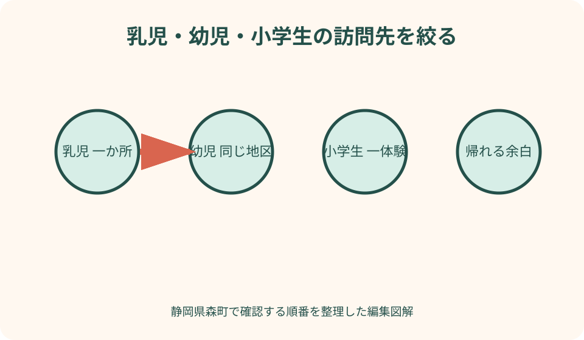
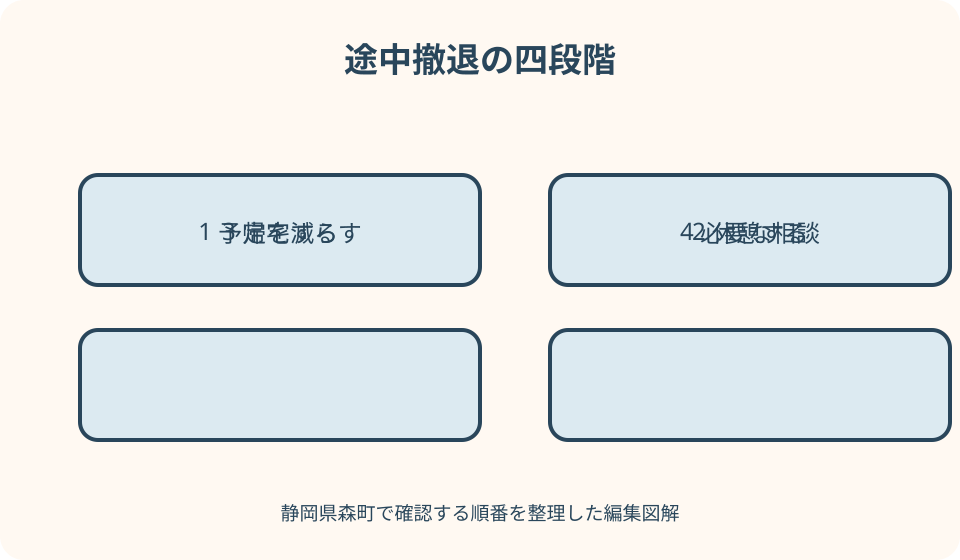

森町観光・子連れ｜最終確認 2026-08-10
静岡県森町の子連れ観光・家族旅行｜乳児・幼児・小学生別の組み立て方
静岡県森町の子連れ観光は、子どもの年齢より『起きて動ける長さ』から決めます。乳児は小國神社かことまち横丁の一か所、幼児は両者を体調に合わせて一組、小学生は予約条件を確認したアクティ森を主目的にするのが組み立てやすい形です。ただし、ベビーカーで通れる、授乳室がある、体験できる、安全に川へ入れるとは記事で保証しません。訪問前に設備と年齢条件を施設へ聞き、現地で食事、トイレ、暑さ、雨、混雑を見て一か所で帰る選択を持ちます。

家族旅行は子どもの一番短い活動時間に合わせる
きょうだいの年齢が違う時は、最年少の昼寝、食事、排せつを旅程の骨格にします。小学生が動けても、乳児を長時間待たせる計画にはしません。
訪問先は一日1〜2か所です。同じ地区の小國神社とことまち横丁を一組にできても、そこからアクティ森を当然の続きとして加えません。
出発前に、絶対に行きたい一か所、体調が良ければ行く二か所目、すぐ帰る条件を家族で共有します。予定変更を大人の失敗にしない言葉を決めます。
本記事は家族で各施設を利用した体験談ではありません。2026年8月10日に確認した町と運営者の情報を基に、当日確認が必要な項目を示します。
乳児は参拝か食事・休憩の一方を選ぶ
乳児連れは、小國神社で短く参拝するか、ことまち横丁で食事と休憩を取るかを第一目的にします。両方を予定しても、後半は当日判断です。
授乳、ミルク、おむつ替え、離乳食の間隔を出発前に書きます。目的地への到着時刻ではなく、次のケアまでに駐車、移動、用事を終えられるかを見ます。
授乳室、おむつ替え台、給湯、手洗い、ごみ箱の有無と場所は、施設や店舗へ問い合わせます。子育て情報がある町でも観光施設に同じ設備があるとは限りません。
泣き続ける、授乳できない、暑い、濡れた、保護者が疲れた場合は車や安全な休憩場所へ戻ります。落ち着かなければ二か所目へ進まず帰ります。
乳児のベビーカーと抱っこひもは現地条件で使い分ける
ベビーカーを使えるかは、駐車場から入口までの路面、段差、砂利、混雑、雨で変わります。神社や店舗の全経路が平坦とは断定しません。
問い合わせでは、ベビーカーの通行、置き場、階段を避ける経路、混雑時の扱いを聞きます。現地表示で利用を控える場所があれば従います。
抱っこひもは段差で便利でも、暑さと保護者の負担が増えます。日陰で休み、乳児の顔色、呼吸、汗を確認し、長時間密着したまま歩きません。
車内にベビーカー、保冷品、着替えを積む時は、乳児の乗降場所を確保します。駐車区画の外で荷物を広げず、移動前に子どもの安全を優先します。
幼児は小國神社と横丁を同じ地区の二か所にする
幼児は参拝を短くし、横丁で食事または一品を選ぶ組み合わせが候補です。境内を全部歩くことや、全店を回ることを達成目標にしません。
参拝の前に空腹なら食事を先にし、食後に眠くなる子なら参拝を先にします。一般的な順番より、子どものいつもの生活リズムを優先します。
境内では大声や走り回りを止められる大人の人数を考えます。兄弟が別方向へ動く場合、撮影を優先せず、大人一人が一人を見る配置にします。
横丁の商品、席、営業は当日変わります。列が長ければ待てる限界を決め、買えなくても別の行列へ移らず、持参した補食の可否を確認します。
幼児の昼寝は移動時間ではなく睡眠環境で決める
車で眠る予定でも、渋滞、駐車待ち、乗降で起きることがあります。昼寝を移動へ完全に任せず、眠れなかった時に一か所で終える案を持ちます。
ベビーカーで眠らせる場合は、置ける休憩場所、日陰、気温、騒音を確認します。通路や店舗入口をふさぐ位置で寝かせません。
車なしでは列車やバスの乗換えが睡眠を中断します。帰りの便を優先し、眠った子を抱えて長距離を歩く経路を旅程へ入れません。
昼寝後に機嫌が戻らない、食事が取れない、便へ間に合わない場合、午後の予定を取り消します。『せっかく来た』を継続理由にしません。
小学生はアクティ森の一体験を予約の軸にする
小学生はアクティ森の創作や屋外活動を候補にできますが、学年だけで参加可否を決めません。施設が示す年齢、身長、技能、付き添い条件を確認します。
2026年のリニューアル案内にはマウンテンバイクパークや子ども用車体の説明があります。ただし空き、サイズ、コース、装具、料金を訪問日に施設へ確かめます。
陶芸などの制作では、受付、説明、作業、片付け、受け取り方法を聞きます。完成品が当日持ち帰れる、予定時刻どおり終わるとは保証しません。
きょうだいが同じ体験へ参加できない時は、待つ場所と大人の分担を確認します。一人の付き添いが必要なら、もう一人を放置する申込みはしません。
体験年齢・用具・同意を申込み前に質問する
予約時は、子どもの年齢、身長、経験、人数、希望体験を伝えます。対象年齢だけでなく、保護者の参加、見守り、同意書、開始前説明を尋ねます。
貸出用具があっても、希望サイズが残るとは限りません。靴、衣服、ヘルメット、手袋、着替えの持参と貸出範囲を分けて確認します。
屋外体験は雨、風、路面、暑さで変更されます。天候判断を家庭だけで行わず、施設の実施可否に従い、無理なら屋内または延期へ変えます。
子どもが現地で怖がったら、予約済みでも参加を強制しません。取消しや見学への変更を受付へ相談し、安全説明を理解できない状態で始めません。

食事は量・待ち時間・アレルギーを別に確認する
子ども向けに見える商品でも、一人分の量、辛さ、硬さ、温度は家庭の基準と異なります。注文前に内容を店員へ聞き、分ける食器の可否も確認します。
アレルギーは原材料だけでなく、調理器具、油、製造場所の交差接触を質問します。対応できない場合に備え、持参食を食べられる場所を施設へ確認します。
待ち時間が長い時は、列に残る大人と子どもを休ませる大人を分けます。順番確保の方法が認められない場合、別の営業確認済み候補へ移ります。
飲み物と小さな補食を用意しても、境内、工房、店舗内で自由に飲食できる意味ではありません。許可された場所でごみを持ち帰る準備をします。
トイレ・授乳・着替えは到着前に位置を聞く
トイレは『あるか』だけでなく、駐車場や体験場所からの距離、子ども用便座、多目的設備、おむつ替えを確認します。設備の使用可否は現地表示が優先です。
授乳は専用室がなければどこで相談できるか、ミルクの湯を持参すべきかを聞きます。店舗席や車内を唯一の案にせず、気温とプライバシーを考えます。
川辺や屋外体験を含む日は、全身の着替え、濡れ物袋、タオル、替え靴を用意します。施設の貸出や販売を当然の備品として期待しません。
森町の子育て支援センターは地域の親子支援情報として確認できますが、観光客の休憩所や託児所として無断利用できるとは限りません。対象と利用条件を問い合わせます。
宮川や水辺では遊べる前提を置かない
小國神社の宮川は参拝地の自然です。川遊びを常時提供する管理施設と決めつけず、立入、水遊び、履物について現地の表示と神社の案内に従います。
浅く見えても、水位、流れ、石の滑り、急な深みは写真で判断できません。大人が手の届く範囲にいても安全保証にはならず、増水時は近づきません。
犬や他の来訪者がいる場所では、子どもが急に追いかけたり触れたりしないよう見守ります。生き物、植物、石を持ち帰ってよいとは考えません。
靴や服が濡れた時は、そのまま冷房の効いた車や施設へ入らず着替えます。着替えられない場合は水辺を予定から外します。
暑さ・雨・雷は予定を中止する理由にする
夏は日陰があっても、駐車場、抱っこひも、舗装路で体温負担が増えます。水分、帽子、休憩を用意し、暑さ指数や警戒情報を確認します。
乳児や幼児の顔色、汗、反応が普段と違えば、観光を続けず涼しい場所へ移ります。医療上の判断が必要なら、公的な救急相談や医療機関へつなぎます。
雨天はベビーカーの操作、傘、子どもの手つなぎを同時に行えない場合があります。大人の人数と手荷物を見て、参拝や町歩きを短縮します。
雷鳴や強風があれば屋外体験と水辺を中止します。施設が営業していても、そこへ向かう道路や乗降が危険なら旅行を延期します。
混雑時は家族が離れないルールを先に決める
紅葉、祭事、休日は駐車、参道、飲食店が混みます。到着を早めれば必ず空くとは保証せず、施設の最新告知と現地誘導を確認します。
子どもの服装と連絡先を出発前に家族で確認し、迷った時の集合場所を大人同士で決めます。個人情報を外から見える位置へ大きく表示しません。
列に並ぶ時は、トイレへ行く大人と残る大人の連絡方法を決めます。電波や音で連絡できないことも考え、子どもだけを場所取りに残しません。
満車なら路上で子どもを降ろさず、係員の案内へ従います。長く待てない家族は、混雑地区を諦め、営業確認済みの別案か帰宅へ切り替えます。
車なしは帰りの便と抱えられる荷物を先に決める
森町公式の公共交通案内から、鉄道、路線バス、町営バス、タクシーの運行主体へ進みます。休日や季節で運行が同じとは限りません。
帰りの便を先に決め、停留所まで子どもの速度で歩ける時間を加えます。大人だけの地図所要を、幼児連れの接続余裕へ流用しません。
ベビーカー、抱っこひも、着替え、飲料、土産を一人が持てるか確認します。乗換えで子どもの手を離さないよう、買い物量を抑えます。
運休や乗り遅れでは、タクシーがすぐ来るとは考えません。手配できなければ遠い二か所目を外し、駅や安全な待機場所へ戻ります。
途中撤退は四段階で迷わず決める
第一段階は予定を一つ減らすことです。昼寝、空腹、雨、待ち時間が出たら、買い物や散策を外し、主目的と帰路だけを残します。
第二段階は休憩です。トイレ、授乳、着替え、水分を済ませても回復しない場合、同じ場所で待ち続けず、車や駅へ向かいます。
第三段階は帰宅です。発熱、けが、激しい疲れ、荒天、交通障害では、予約や購入予定より子どもと保護者の状態を優先します。
第四段階は必要な相談です。症状や事故があれば施設職員へ知らせ、緊急性に応じて119番や公的相談先を利用します。本記事は医療判断を代替しません。

家族の識別情報と集合場所を出発前に決める
混雑する参道や催事では、子どもの当日の服装を出発時に写真へ残し、氏名を外から大きく見せずに保護者の連絡先を持たせる方法を家族で決めます。
『迷ったら車』では、子どもだけで駐車場を横切る危険があります。施設の案内所、受付、目印になる建物など、係員へ助けを求められる集合場所を一か所選びます。
保護者が二人以上でも、トイレ、会計、荷物運搬で担当が曖昧になります。移動を始めるたび、誰がどの子を見るか声に出して引き継ぎます。
子どもが見当たらないときは家族だけで広く探し回らず、施設係員へ最後に見た場所、時刻、服装を伝えます。水辺や道路が近い場合は最初に共有します。
帰宅後まで含めて着替えと汚れ物を管理する
アクティ森の屋外活動や雨上がりの参道では、靴下、靴、衣服が濡れる可能性を見込み、着替えを年齢別の袋へ分けます。全員分を一袋に詰めて車外で探しません。
泥や水で汚れた衣類は、施設で洗えると決めつけず、密閉袋とタオルを用意します。川や境内の水場を洗濯場所として使わず、施設の利用ルールへ従います。
車へ戻った直後に着替える場合、駐車区画の外へ扉を広げたり子どもを車道側へ立たせたりしません。安全に更衣できる場所がなければ施設へ相談します。
帰宅時間には入浴、洗濯、体験品の保管、翌日の学校準備まで含めます。夕方まで予定を詰めて保護者の片付け負担を見えなくしないことが、次の家族旅行につながります。
良い点——年齢ごとに異なる森町との接点がある
良い点は、乳児期は短い参拝と家族の食事、幼児期は自然と門前、小学生期は手仕事や屋外活動というように、再訪の仕方を変えられることです。
同じ地区に神社と横丁があるため、幼児連れは長い車移動を足さずに二つの目的を組めます。ただし混雑と段差を現地で判断する必要があります。
アクティ森は複数の体験候補があり、子どもの興味を申込み前に話し合えます。選択肢があることと、当日参加できることは分けて確認します。
町の子育て情報が公開されていることも、相談先を知る入口になります。観光設備の情報とは区別し、居住者向けサービスの対象を尊重します。
注文したい点——子連れ設備を訪問順に確認しにくい
注文したい点は、観光、店舗、子育て、交通のページが分かれ、駐車からトイレ、授乳、段差、食事まで一続きで確認しにくいことです。
ベビーカー、子ども用便座、おむつ替え、授乳の有無は、設備名だけでなく場所と利用条件が必要です。更新日付きの施設別表示が望まれます。
体験は対象年齢に加え、身長、付き添い、用具、雨天判断、所要の幅を同じ画面で比較できると、兄弟の分担を決めやすくなります。
公共交通も、子どもの徒歩速度と待機場所を含む案内があれば実用的です。本記事では固定時刻を書かず、運行主体と施設へ戻る確認順で補います。
代案・結論——一か所で終えても成功と決める
乳児は参拝か休憩、幼児は神社と横丁、小学生は予約体験を基本にし、子どもの一番短い活動時間へ予定を合わせます。
前日はトイレ、授乳、おむつ替え、食事、アレルギー、段差、体験条件、天候、帰りを確認します。不明な設備を利用できる前提にしません。
雨、暑さ、満車、行列、売り切れ、子どもの拒否があれば、二か所目を外し、休憩、帰宅、必要な相談の順に切り替えます。
結論は、一か所を落ち着いて訪ね、安全に帰れれば家族旅行は成立することです。できなかった場所は、年齢と季節を変えた次回へ残します。
大石の視点——子どもの記憶より家族の余白を残す
私（大石）は、幼い子どもが観光地を覚えているかより、大人が焦らず声を聞けたかを大切にします。予定が少ないほど、地域の音や人との会話が残ります。
写真を撮る時も、子どもを立入禁止や通行の妨げになる場所へ誘導しません。撮れなければ諦め、安全と参拝者への配慮を優先します。
家族の記録には、行けた場所だけでなく、昼寝、食事、トイレ、暑さ、混雑、撤退理由を書きます。次回の持ち物と訪問数を現実的に更新できます。
この記事の情報確認日は2026年8月10日です。設備、店舗、体験、交通は変更されます。訪問直前に森町と各運営者の最新情報を確認してください。
公式情報・確認先
掲載内容は次の一次情報を基礎に整理しました。営業、料金、催し、交通は変わるため、出発前または手続き前にリンク先で最新情報を確認してください。
- 観光（静岡県森町、2026-08-10確認）
- 森町体験の里アクティ森リニューアルオープンについて（静岡県森町、2026-08-10確認）
- 森町児童館・森町子育て支援センター（静岡県森町、2026-08-10確認）
- 森町の公共交通について（静岡県森町、2026-08-10確認）
- 小國神社（遠江國一宮 小國神社、2026-08-10確認）
- ことまち横丁（ことまち横丁、2026-08-10確認）